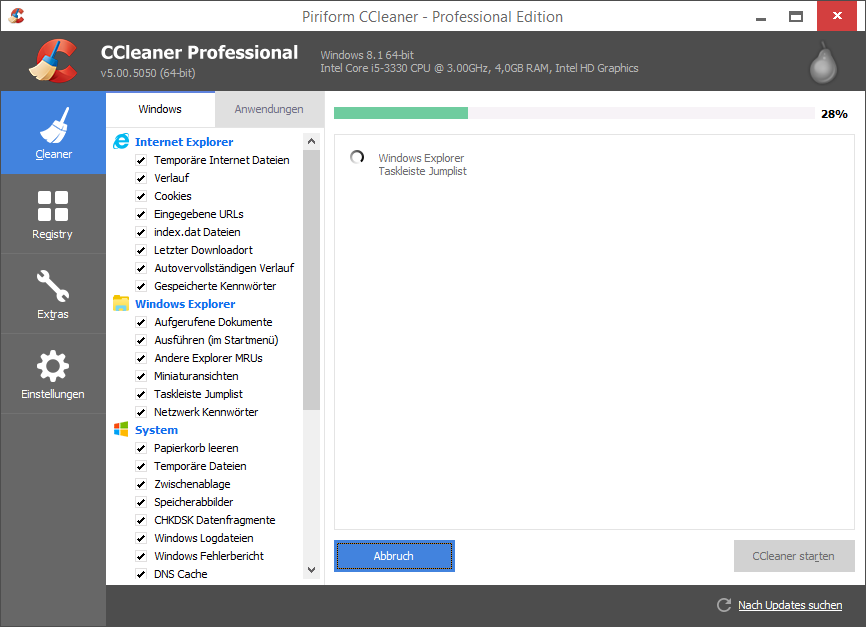

CCleaner kostenlos herunterladen
CCleaner herunterladen für Windows
HIER AKTUELLE VERSION KOSTENLOS HERUNTERLADENCCleaner für Windows 10 (und Windows XP/Vista/7/8)
CCleaner kostenlos herunterladen in der Standard-Edition. Die kostenlose Standard-Edition reicht für den Privatanwender in der Regel vollkommen aus.
Was macht der CCleaner?
Es kann das komplette Windows-System oder auch nur bestimmte Bereiche untersuchen. Es spürt dabei unnötige, kaputte, redundante (doppelte) und temporär-gespeicherte Dateien auf.
Im Laufe der Zeit und durch diverse Installationen (wie z.b. regelmäßige Windows-Updates), sammelt sich überflüssiger Balast an.
Mit dem CCleaner wird ein Auftrag erstellt, das gesamte Systen einmal gründlich zu "putzen". Dabei werden alle unerwünschten und unnötigen Daten von der Festplatte entfernt.
Die aktuelle Version vom CCleaner ist die Nummer 5. Sie ist für die Wartung und einwandfreien Betrieb von Windows zuständig. Microsoft selbst hat eine solche Umfangreiche Funktion selbst nicht in Windows eingebaut.
Der CCleaner ist für zwei Sachen besonders bekannt
- er erkennt vollautomatisch jeglichen überflüssigen Datenmüll
- und räumt diesen Datenmüll zuverlässig auf
Beispielweise gibt es reichlich Anwendungen, die nur einmal alle paar Wochen mal benötigt wird. Aber dennoch startet sie jedesmal automatisch beim Windows-Start mit - das ist unnötiger Balast!
Andere Anwendungen lassen sich nicht vollständig deinstallieren. Es bleiben überflüssige Reste von Daten auf der Festplatte. Die nie wieder benötigt werden. Im schlechtesten Falle werden sogar Teile der "deinstallieren" Anwendung immernoch im Hintergrund ausgeführt - und verbrauchen unnötig Resourcen!
Das dadurch Windows mit der Zeit immer langsamer wird, erklärt sich von selbst.
Weitere Bespiele sind
- Verknüpfungen auf dem Desktop bleiben ohne Funktion zurück
- Die Windows Registry enthält viele Einträge die keine Funktion haben
- Es sind viele Startmenü Einträge vorhanden, aber ebenfalls ohne Funktion
- Alles wird ingesamt sehr unübersichtlich
CCleaner kümmert sich genau darum. Als Ergebnis gibt es ein schlankes, aufgeräumtes und schnelles Windows-System. Das beste dabei ist: Es kostet nichts. Denn CCleaner kostenlos herunterladen werden.